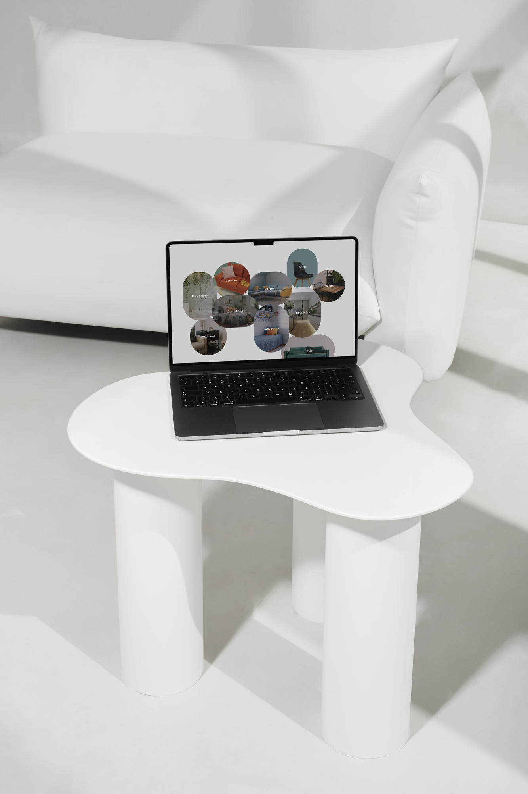

Merkamueble — Web redesign

Role
UI design, Typography, Layout
Type
University project · Unofficial redesign
Year
2024
Tools
Adobe XD, Google Fonts
A redesign of the “Ambientes de Salón” (living room settings) section of the Merkamueble website, built on a typographic and visual overhaul. The aim was a clean, modern interface that combines functionality with a striking presentation and makes the page more engaging to browse.


Typography. Two typefaces with distinct roles: a bold, modern font for headings and a clean, utilitarian one for body text, for clarity and readability. Both come from Google Fonts, for accessibility and quality.
Hierarchy and grid. A new layout on a 12-column grid gives the page balance and structure, and makes navigation easier.


Imagery and content. The original images were replaced with new ones that stay relevant to the products but feel fresher. All of the original content was kept and reorganised to improve usability.
The logo. A typographic reinterpretation of the Merkamueble logo brings the brand in line with the new graphic language.

The design was built in Adobe XD on a 1,366 px artboard and delivered as high-resolution PNGs, together with the editable XD file so every resource could be checked.